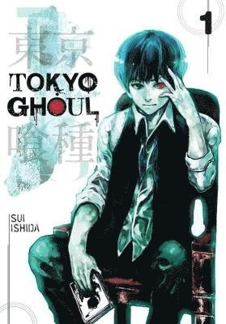

These three anime have left a lasting impact on me, each offering rich world-building and compelling storytelling. At the top is Shangri-La Frontier, with its captivating premise and immersive narrative. However, it was slightly overshadowed by Frieren: Beyond Journey’s End, a show that stands out by exploring the aftermath of a grand adventure, offering a unique and emotional perspective. Despite two of these anime having only one season, their depth and memorable stories make them truly unforgettable.
One Piece stands above the rest as my top anime because of its unmatched world-building, character depth, and emotional storytelling. Unlike Shangri-La Frontier and Frieren, which both have impressive narratives despite shorter runs, One Piece offers a vast, interconnected world that has been evolving for over two decades. Its longevity allows for deep character development, where even side characters have meaningful backstories. The journey of Luffy and his crew is not just about adventure; it's about friendship, dreams, and perseverance. The emotional weight of its arcs, combined with complex themes of freedom and justice, makes One Piece more than just an anime — it’s a lifelong journey.
SPECIAL MENTIONS

Tokyo Ghoul
My very first anime that I finished.
Click to know more about Tokyo Ghoul.